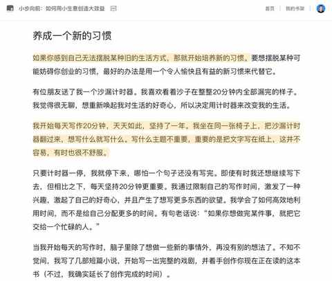
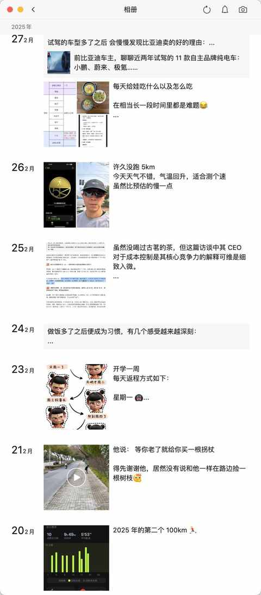
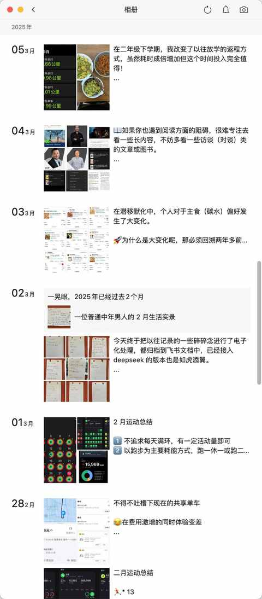
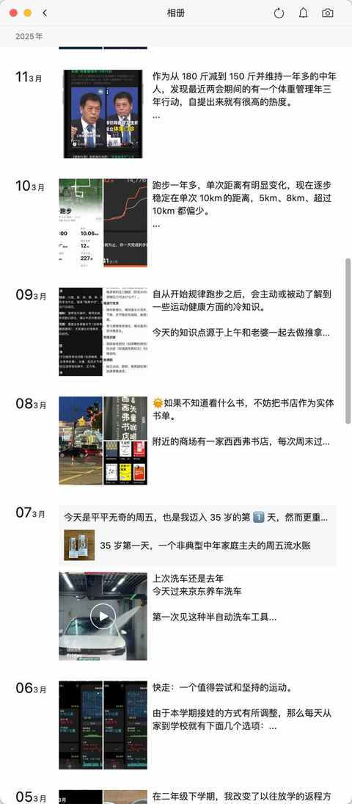
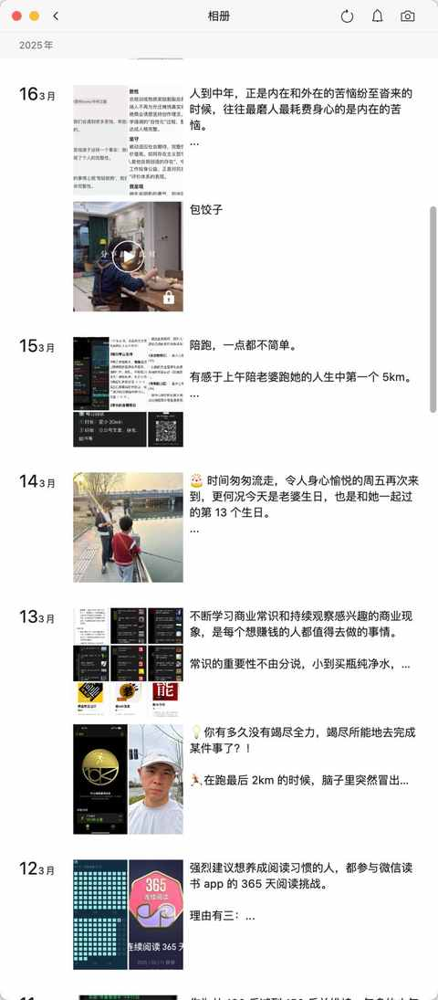
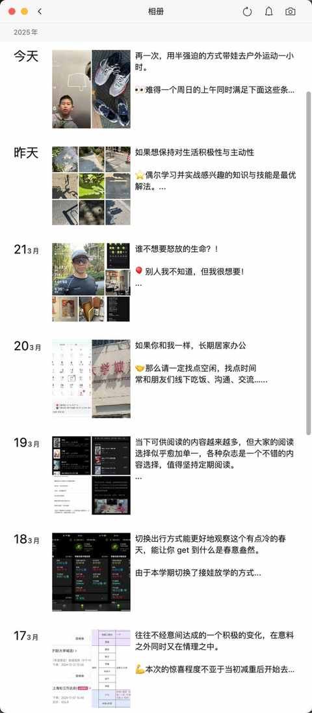

普通中年人的破局尝试，用 30 天养成一个新习惯：每天发 1 条朋友圈
约斯特普通
2025-03-23
一、动机
一个中年人迫切的想改变现状
上个月看的一本书《小步向前：如何用小生意创造大效益》

其中的一篇文章是讲其为了摆脱某种旧的生活方式，然后通过养成一个新习惯之后获得了诸多超出预期的收益。

二、实践
一点点优化，一点点调整
① 刚开始时：跟着感觉走
内容随机性大，请一定跟着感觉走

② 发多了之后：要真诚的表达
愈加觉得真诚和言之有物同样重要

③ 习惯养成之后：朋友圈就是一种记录与思考结合体
让分享带动思考，用输出各类体验与观察的契机去带动思考

当发朋友圈变成日常，不经意间的素材积累会越来越多


三、收获
一个习惯养成之后，虽然短期收益小，但长期收益大
① 独特的视角
每个人都有独特视角的观察，每个人的生活都值得记录与分享
② 认真的生活
认真生活的人必然不会被辜负，多记录多分享让人更认真的去对待生活
③ 真诚的记录
每天都有一些时间，让自己无法逃避真正的思考，直面真实的自己